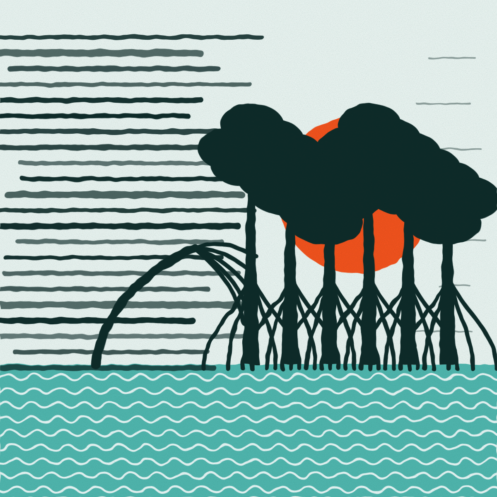
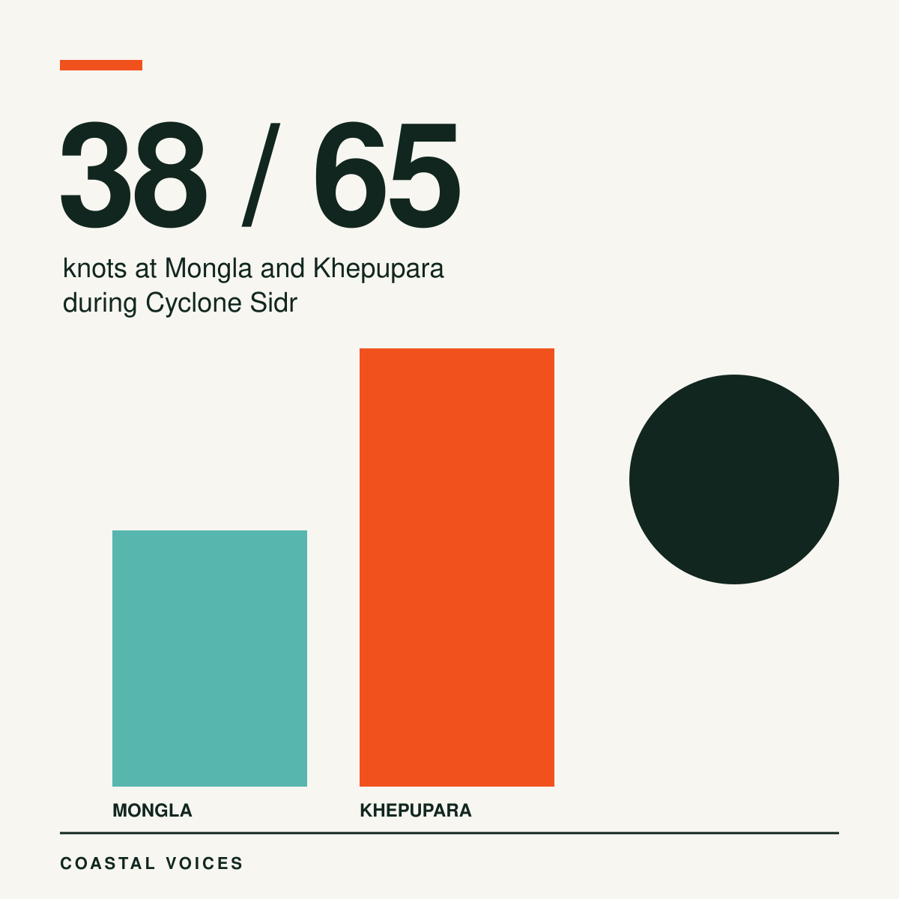
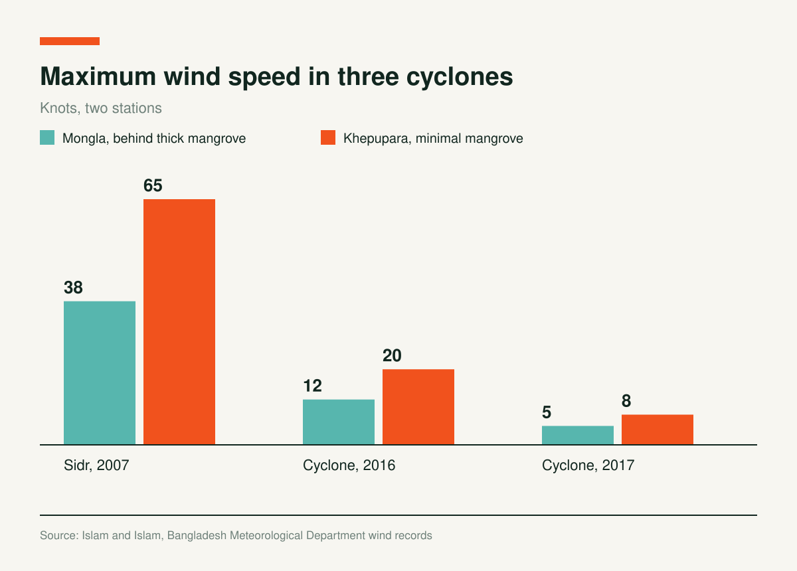
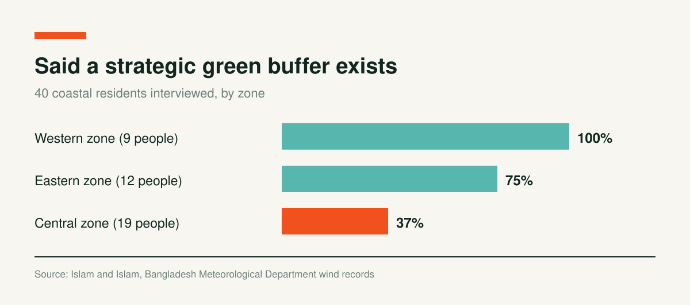

At Mongla the Wind Reached 38 Knots. at Khepupara, 65.

On the day Cyclone Sidr struck in 2007, the wind station at Mongla recorded a maximum of 38 knots. At Khepupara, the maximum was 65 knots. Mongla sits behind the Sundarbans mangrove forest. Khepupara has minimal mangrove cover.
Syed Labib Ul Islam and G.M. Tarekul Islam compared Bangladesh Meteorological Department wind records from nine stations for cyclones between 1988 and 2019. They sorted 19 cyclones by strength: eight with maximum winds up to 100 kilometres an hour, five between 101 and 150, and six at 151 or higher.


Mongla recorded lower wind speeds in cyclones of every strength group. In Sidr, its reading was 41.5% lower than Khepupara's. In the 2016 and 2017 cyclones, Mongla recorded 12 and 5 knots against 20 and 8 at Khepupara, which is 40% and 37.5% lower.
Stations in Between
Hatiya and Sandwip, both with minimal mangrove cover, each recorded a highest wind of 60 knots, below Khepupara's. The authors credit comparatively more vegetation. At Kutubdia the highest reading in the 2016 and 2017 cyclones was 29 knots, and at Teknaf 63 knots, both stations with moderate mangrove strips.
The authors add caveats from earlier research. A study found that the protection from mangroves is small when a cyclone makes landfall outside the Sundarbans. Another estimated that money lost to cyclones could be halved with mangrove protection.
What 40 Residents Said
The researchers also interviewed 40 people along the coast: nine in the western zone (Satkhira and Khulna), 19 in the central zone (Patuakhali, Bhola and Noakhali) and 12 in the eastern zone (Chattogram and Cox's Bazar).

In the west, all nine said the Sundarbans protect them, and they worried about its future. In the central zone, 37% said a strategic green buffer exists, and the rest were unsure. Their main worry was erosion. Cyclones strike about once a year, they said, while erosion eats at the coast almost year round. Most backed sea walls and high embankments, though they acknowledged that green buffers have slowed land loss in some places.
One central zone respondent said: “Our embankments need to be improved, otherwise flood water will keep getting up and destroy our farm yields.”